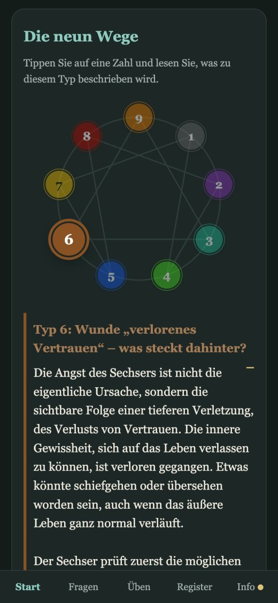
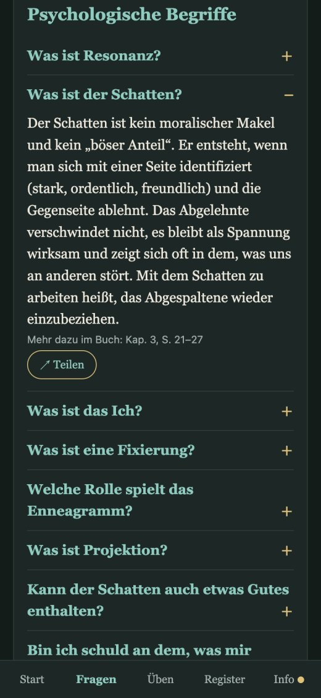
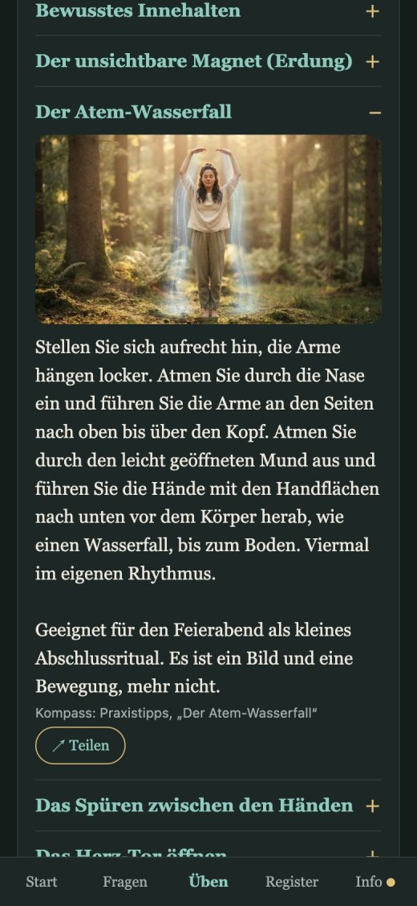
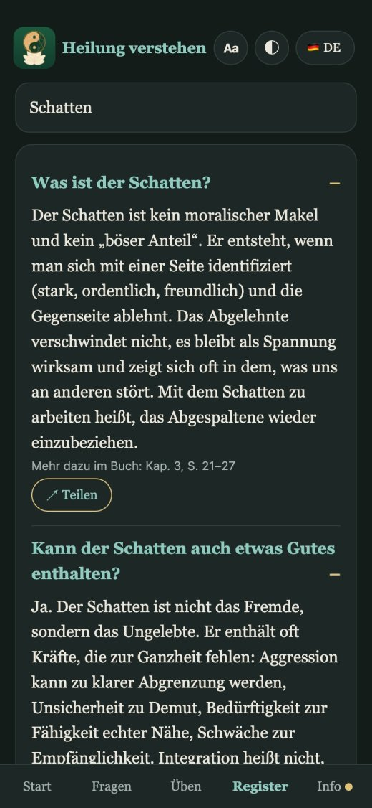

Die App zum Buch „Heilung als Erinnerung“

Heilung verstehen
Tiefer als die Masken.
Unter der Wasseroberfläche des Alltags wirken Muster, die wir selten bemerken: früh gebildete Schutzstrategien, die unbewusst weiterlaufen und uns in einer Fixierung festhalten. Das Enneagramm beschreibt neun solcher Grundbewegungen, jede mit ihrer eigenen Wunde und Sehnsucht. Die App erklärt in kurzen Fragen und Antworten, wie Fixierung entsteht, was Schatten und Ich bedeuten und welcher Weg zurück gemeint ist. Auf dem Handy, in acht Sprachen: Deutsch, Englisch, Spanisch, Französisch, Italienisch, Portugiesisch, Chinesisch und Japanisch.
Jetzt erhältlich
Heilung verstehen öffnenVollversion freischalten: 12,99 €
Auf Deutsch, Englisch und sechs weiteren Sprachen. Zum Kennenlernen sind ausgewählte Antworten und Übungen als Ausschnitt frei. Für alle 94 Antworten und alle 25 Übungen gilt eine einmalige Zahlung, ohne Abo: Einführungspreis 12,99 €, später 14,99 €. Den Zugang bekommen Sie per E-Mail. Eine Einordnung zur Selbstreflexion, keine Diagnose, kein Heilversprechen.
Der Film zur App
90 Sekunden: die neun Wege, Fragen, Übungen und das Register.
Musik: „Tiefer als die Masken“ von Detlef Rathmer.
Ein Blick in die App
So sieht die App auf dem Handy aus.




Was die App bietet
Eine Enneagramm-Figur auf der Startseite: Tippen Sie auf eine Zahl und lesen Sie zu Wunde, Bewegung und Sehnsucht dieses Typs und zum Weg zurück. Jede Zahl trägt die Farbe ihres Typs.
93 Antworten zu Heilung, Gleichgewicht, Schatten, Ich, Fixierung und Projektion und zu den neun Typen, viele mit aufklappbarer Vertiefung, geordnet in Themengruppen.
25 Übungen, jede mit einem Einstimmungsbild: Innehalten, Atem, Bewegung, Beobachten, Gewohnheiten. Keine Behandlung, nur Anregungen zum Ausprobieren.
Stichwörter zum Nachschlagen und eine Suche über alle Einträge.
Jede Frage und jede Übung lässt sich als Bildkarte mit Antwort, App-Name und Link weitergeben.
„Tiefer als die Masken“ von Detlef Rathmer, zu hören in der App. In der englischen Fassung: „Deeper Than the Masks“.
Deutsch, Englisch, Spanisch, Französisch, Italienisch, Portugiesisch, Chinesisch und Japanisch. Sie wechseln mit einem Tipp, auch Fragen, Übungen und Register sind übersetzt.
Buch und App
Zwei Fassungen, jede für einen anderen Zweck.
„Heilung als Erinnerung“ ist zum Lesen gedacht und führt im Zusammenhang durch alle Kapitel.
Fasst die tragenden Gedanken in kurzen Einträgen zusammen, mit Übungen, Suche und Bildkarten zum Weitergeben. Wer tiefer gehen möchte, liest das Buch.
Das Buch zur App
Der Autor
 Detlef Rathmer
Detlef RathmerSachbuchautor, Enneagramm-Experte, Dozent und Coach. Seit dem Jahr 2000 als Heilpraktiker tätig, mit dem Schwerpunkt klassische Homöopathie.
Hinweis: Die App ordnet Gedanken zur Selbstreflexion ein. Sie ist keine Diagnose, keine Therapie und kein Heilversprechen und ersetzt keine ärztliche oder psychotherapeutische Behandlung. Im Notfall: 112 oder 116 117.